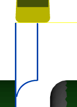

<div id="edgeBreakType"><p>コーナー処理のタイプを選択します。パーツのバック面エッジに面取りまたはフィレットを追加します。この処理は、切削が完了する前に実行されます。</p>

<table class="tipTable" cellspacing="10">
<tr>
<td><center></center></td>
<td><center></center></td>
<td><center></center></td>
</tr><tr>
<td><center><p><b>コーナーを面取り</b></p></center></td>
<td><center><p><b> </b></p></center></td>
<td><center><p><b>コーナーをフィレット</b></p></center></td>
</tr></table>
</div>